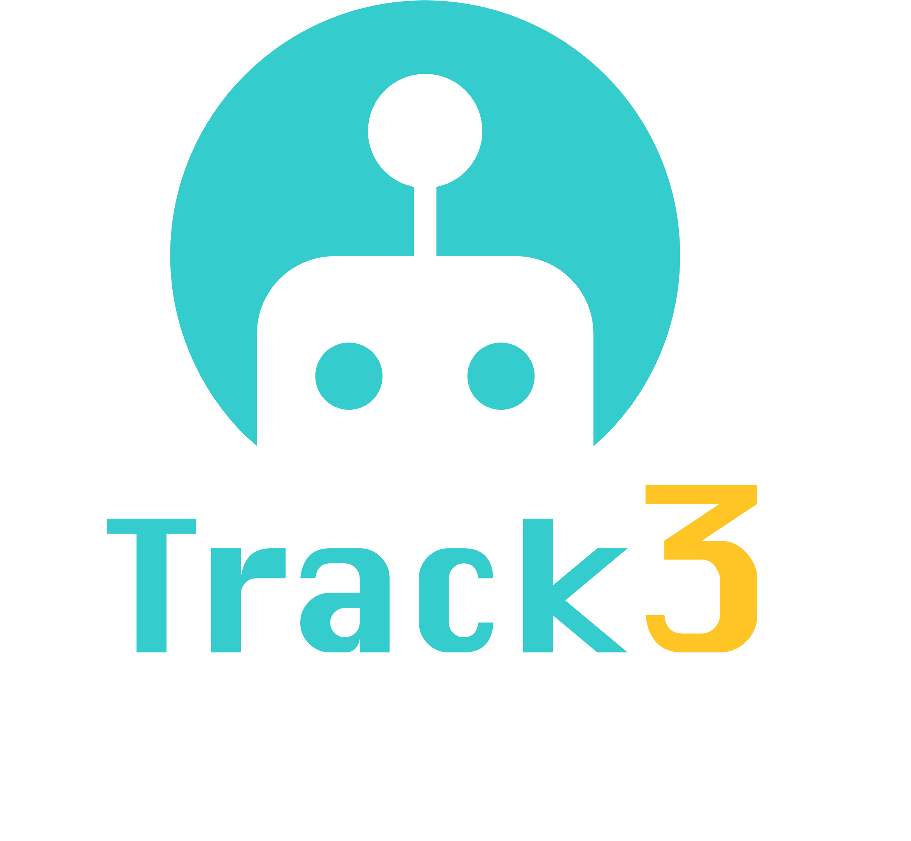

RoboWorld Challenge 2026 · Track #3
SafeDrive-VLA
Towards Safety in Autonomous Driving
Language-guided driving that follows safe instructions and responds safely to instruction-scene conflicts.

Track #3- Benchmark
- CARLA-F / B2D-C
- Setting
- Closed-loop safety-aware driving
- Metrics
- NCR, speed error; DS, SR, infractions
Introduction
Participants develop vision-language-action models (VLAs) for safe navigation guided by natural-language instructions. Given onboard visual observations and an instruction, models generate driving trajectories or control actions that account for surrounding traffic conditions.
Models should follow safe instructions, including turns, lane changes, and target-speed requests. When an instruction conflicts with the traffic scene, models must respond appropriately by slowing down, waiting, or selecting a safe alternative.
Reference
SafeDriveVLA: Navigation-Conditioned World Model Dreaming for Conflict-Aware End-to-End Autonomous Driving
CoRL 2026
Registration
Register Your Team (Google Form)Submission
Submission Portal (CodaBench Server)Dataset & Evaluation Setting
Evaluation consists of 40 closed-loop simulation routes across two complementary test sets.
| Split / Test Set | Size | Details |
|---|---|---|
| CARLA-F | 20 routes | Safe instruction following |
| B2D-C | 20 routes | Conflicting instructions issued when hazards occur |
Evaluation
CARLA-F evaluates safe instruction following using per-instruction Navigation Compliance Rate (NCR) and target-speed error in m/s.
B2D-C evaluates safety-critical driving using Driving Score (DS), Success Rate (SR), and counts of collisions, traffic violations, and route departures. Results from the two test sets will be reported separately.
| Metric | Preferred Direction | Definition |
|---|---|---|
| CARLA-F: Navigation Compliance Rate (NCR) | Higher | Per-instruction navigation compliance. |
| CARLA-F: target-speed error (m/s) | Lower | Deviation from the instructed target speed. |
| B2D-C: Driving Score (DS) and Success Rate (SR) | Higher | Closed-loop driving performance and route success. |
| B2D-C: collisions, traffic violations, route departures | Lower | Counts of safety and route-following failures. |
Reference Baselines
SimLingo and SafeDriveVLA both generate driving actions from visual observations and language instructions. SafeDriveVLA additionally uses explicit driving-mode selection and world-model predictions to handle conflicts between instructions and the traffic scene.
Reference benchmark results are shown below; these are baseline results reported in the SafeDriveVLA paper on the full benchmark routes, not competition submissions.
| Baseline | CARLA-F (NCR) | B2D-C (DS) |
|---|---|---|
| SimLingo | 52.4% | 72.8 |
| SafeDriveVLA | 82.7% | 67.3 |
The CARLA-F values are the average Navigation Compliance Rate (NCR), and the B2D-C values are the average Driving Score (DS). The two test sets measure different aspects of performance: (1) instruction following in safe scenarios and (2) awareness of unsafe instructions.
Track Organizer

Contact
For challenge questions, contact roboworld2026@gmail.com.